Visao front
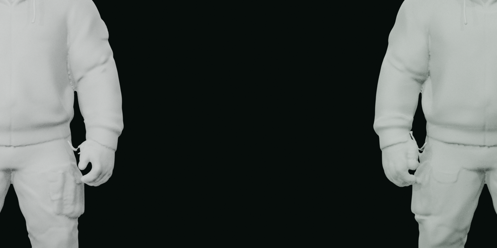
Comparacao visual entre o v13 e a nova copia v34. O vermelho mostra a geometria removida.

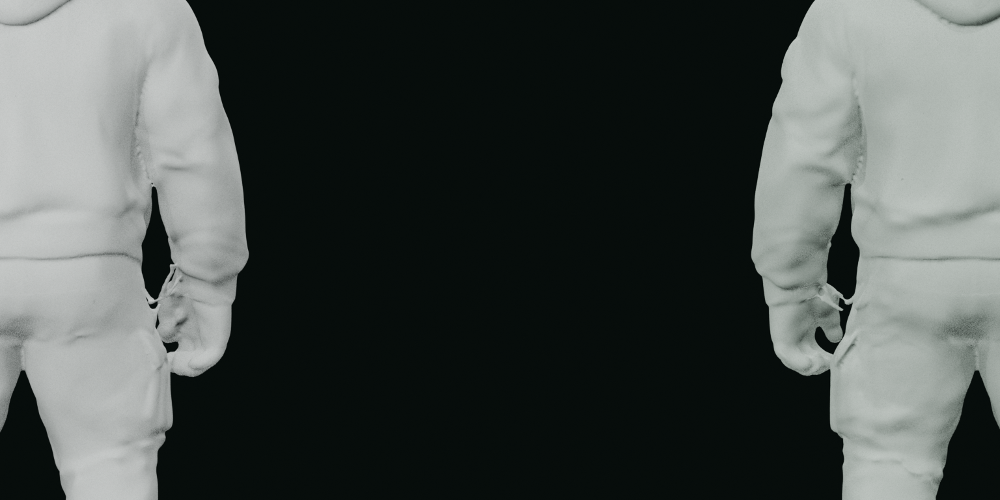
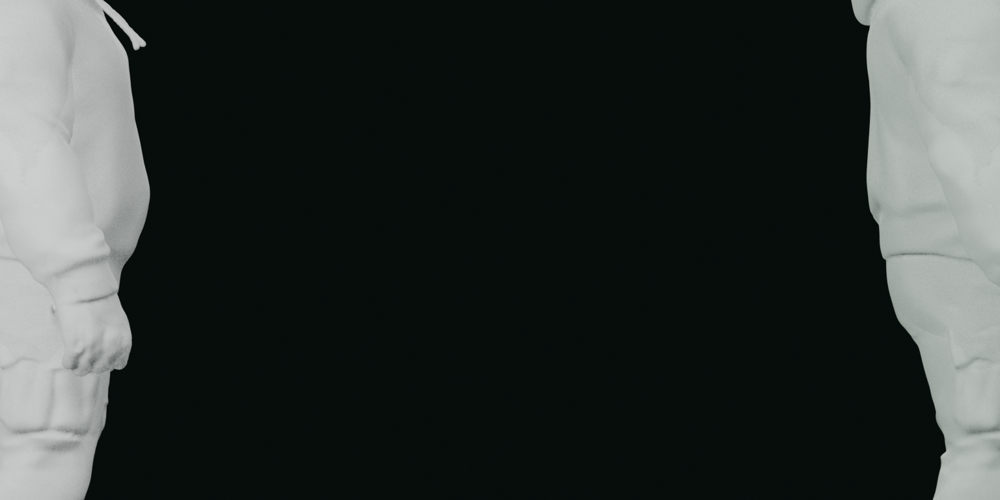
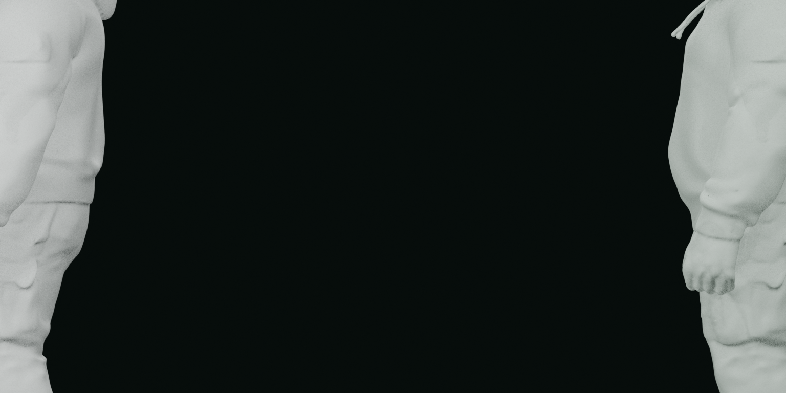
Triângulo residual solto na região da cabeça
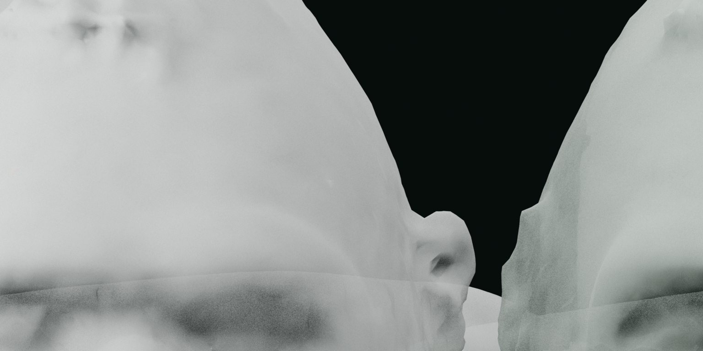
Triângulo residual solto na cabeça
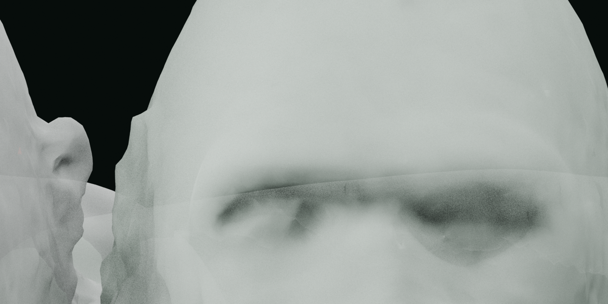
Triângulo residual solto no braço direito
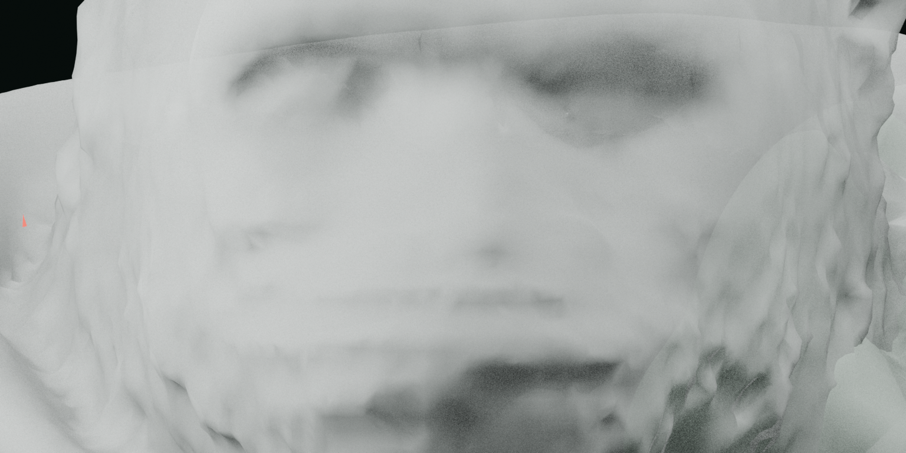
Triângulo residual solto na cabeça
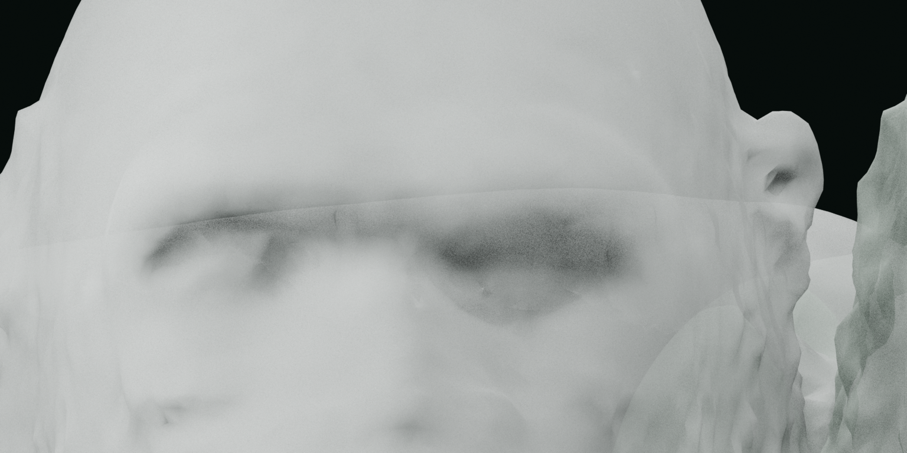
Fragmento residual oculto na costura interna da axila esquerda
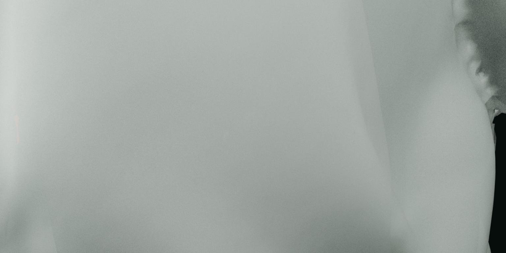
Triângulo residual solto no tronco
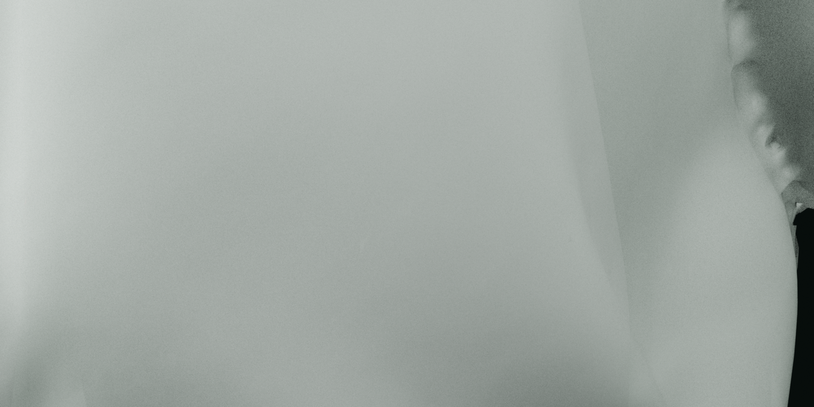
Triângulo residual solto na perna direita
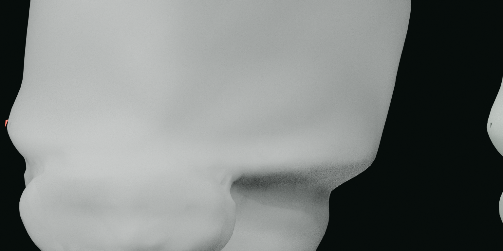
Triângulo residual solto no braço esquerdo
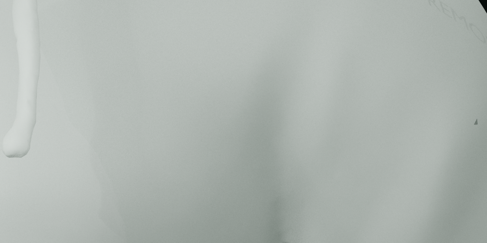
Triângulo residual solto no pé esquerdo
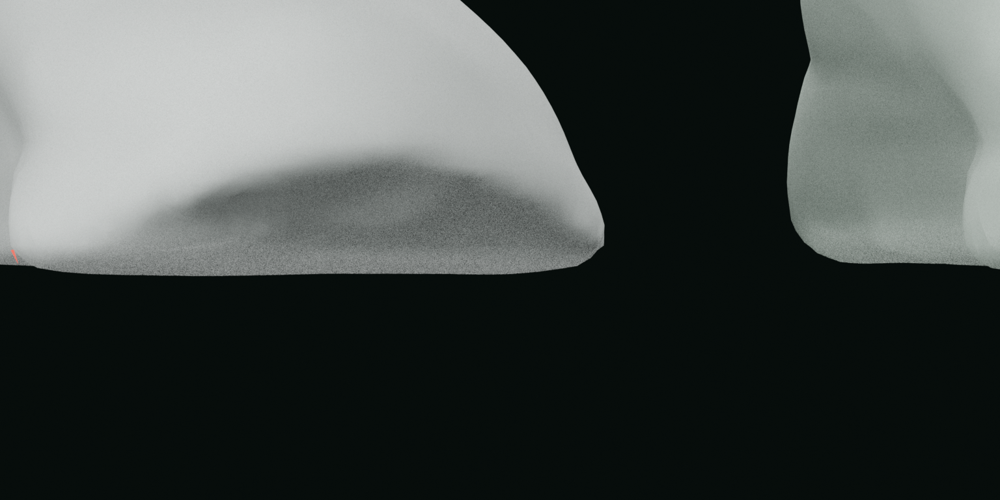
Fragmento residual do polegar esquerdo
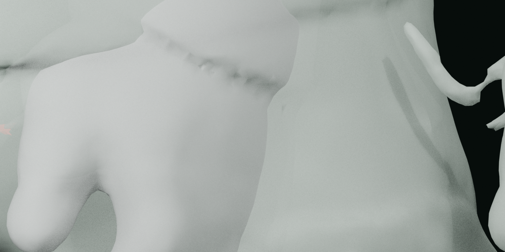
Fragmento poligonal residual do polegar esquerdo
Triângulo residual do polegar esquerdo
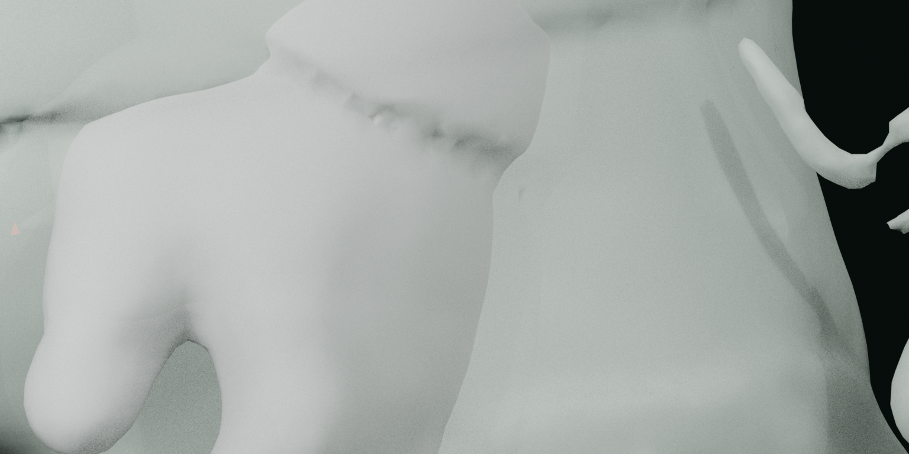
Triângulo residual entre os dedos médio e indicador esquerdos
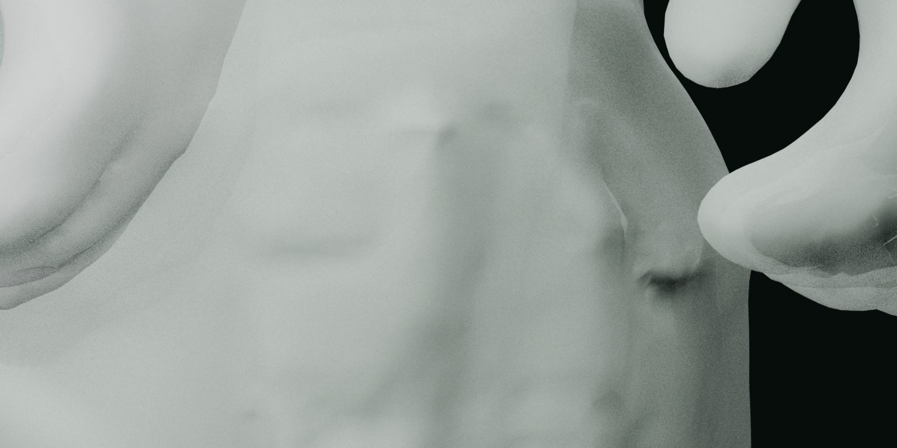
Triângulo residual solto no antebraço direito
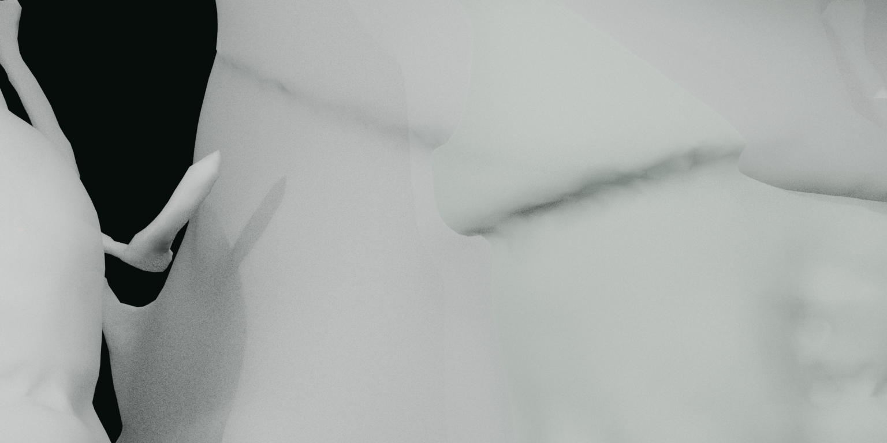
Triângulo residual solto no indicador esquerdo
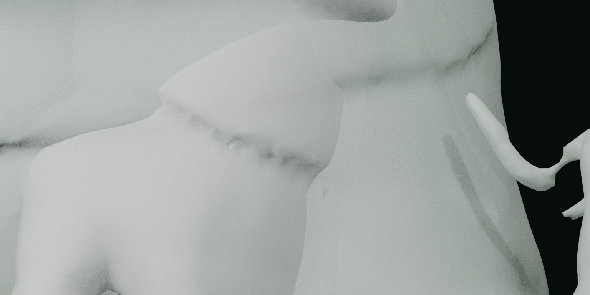
Fragmento plano residual na região da cabeça
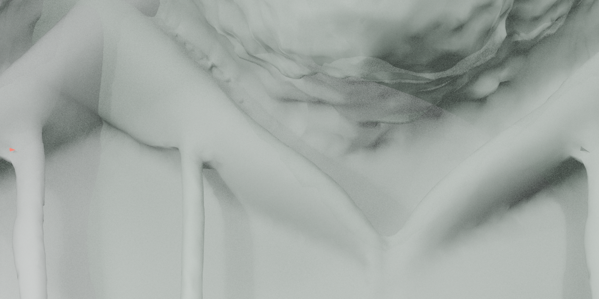
Triângulo residual solto no antebraço esquerdo
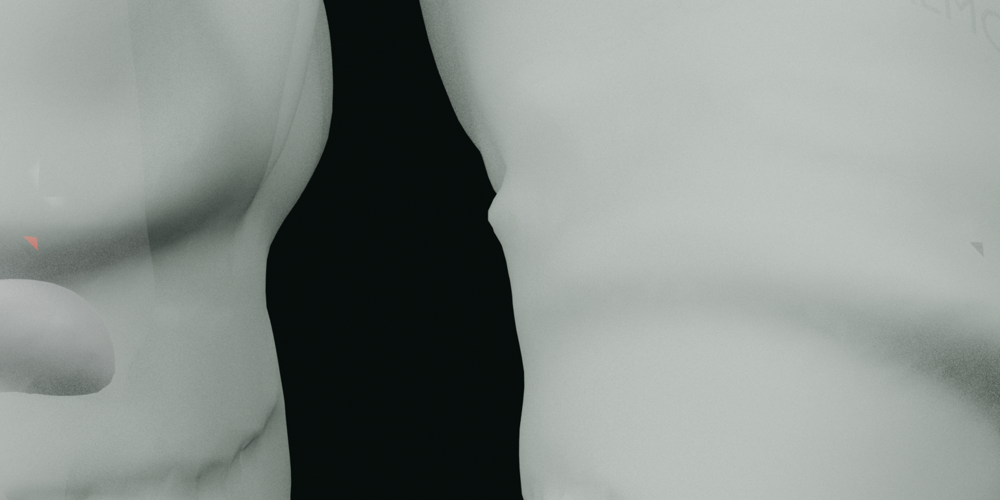